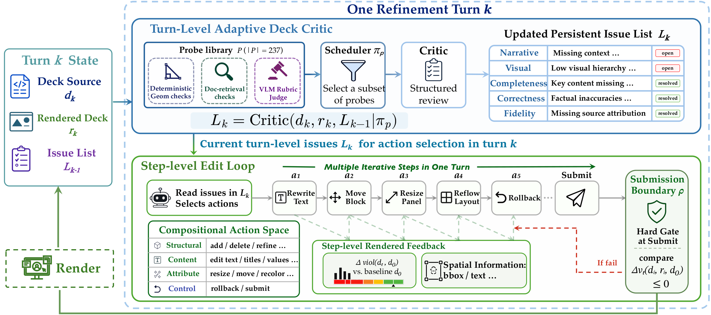
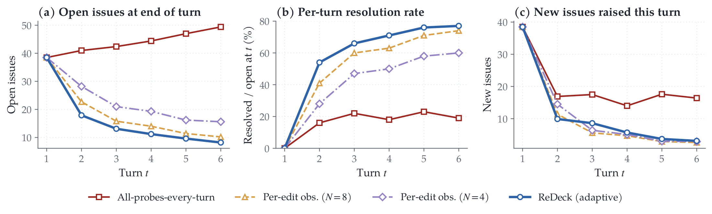
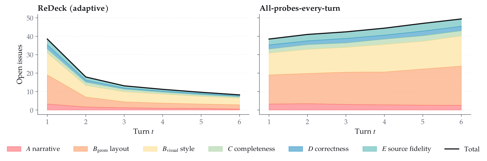
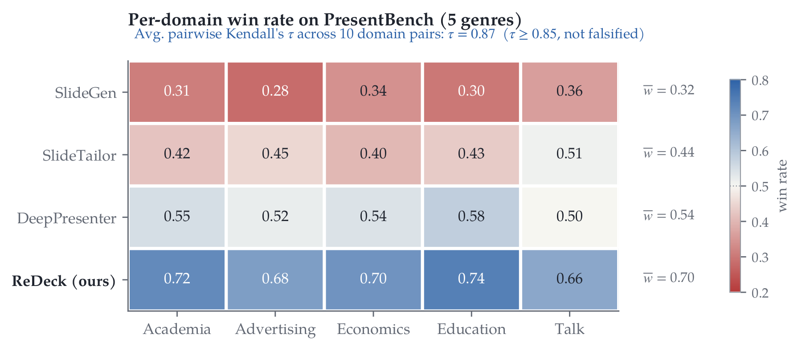

Technical Details
ReDeck: Step-Level Render-Grounded Refinement for Document-to-Slide Generation
1 Microsoft Corporation 2 Shanghai Jiao Tong University 3 Xi'an Jiaotong University 4 Fudan University
* Equal contribution. † Work done during an internship at Microsoft. ‡ Corresponding authors.
ReDeck decomposes slide revision into atomic edit actions and returns renderer-derived observations after each step, turning refinement from "one version, one feedback" into "one edit, one observation."
01
Abstract
Document-to-slide generation is challenging because slides are dense editable artifacts that require both faithful content selection and precise spatial layout. Recent slide agents adopt iterative reflection, but typically follow a monolithic "one version, one feedback" loop: a slide or deck is rewritten, rendered afterward, and critiqued only at the turn boundary. This delayed feedback makes local failures such as overflow, overlap, clipping, and off-canvas placement difficult to attribute and repair.
We propose ReDeck, a step-level render-grounded refinement framework that decomposes slide revision into atomic edit actions and returns renderer-derived observations after each step, turning refinement into "one edit, one observation." To balance local repair with global quality, ReDeck uses multi-granular feedback: step-level render feedback for spatial errors, a turn-level adaptive critic for semantic and design guidance, and a submission-level gate for hard layout validation.
We further introduce DeckQuiz, a benchmark that decouples content fidelity, spatial correctness, and design quality. Across GPT-5.4, Claude-4.6, and Gemini-3.1, ReDeck consistently outperforms existing slide-generation agents, and ablations confirm that feedback timing and granularity are critical for reliable slide refinement.
02
Method Overview
Each turn nests a Turn-Level Adaptive Deck Critic around Step-Level Render Feedback. The critic updates the deck-wide issue list once per turn; after every atomic action, the renderer returns spatial facts to the next reasoning step. Only submission triggers the hard validation gate.

03
Main Results
Performance comparison with published slide agents on DeckQuiz (3 models × 100 tasks × 3 seeds) under matched per-task LLM-call-count caps.
GPT-5.4 · T0 to final
Refinement improves every quality axis
| Model | System | Fid. ↑ | SCR ↑ | Aes. ↑ | Des. ↑ |
|---|---|---|---|---|---|
| GPT-5.4 | SlideGen | 65.3 | 83.4 | 3.08 | 50.2 |
| SlideTailor | 60.2 | 88.2 | 2.90 | 56.4 | |
| DeepPresenter | 76.8 | 66.8 | 3.47 | 55.1 | |
| ReDeck (T0, before repair) | 80.4 | 64.1 | 2.95 | 62.8 | |
| ReDeck (ours) | 88.6 | 91.5 | 3.64 | 71.2 | |
| Gemini-3.1 | SlideGen | 61.5 | 80.1 | 2.92 | 47.3 |
| SlideTailor | 56.8 | 84.7 | 2.71 | 53.2 | |
| DeepPresenter | 72.4 | 63.5 | 3.31 | 52.0 | |
| ReDeck (T0, before repair) | 76.8 | 61.2 | 2.81 | 59.4 | |
| ReDeck (ours) | 85.1 | 88.2 | 3.48 | 68.1 | |
| Claude-4.6 | SlideGen | 63.2 | 81.6 | 3.01 | 48.6 |
| SlideTailor | 58.4 | 86.2 | 2.82 | 54.7 | |
| DeepPresenter | 74.5 | 64.9 | 3.38 | 53.4 | |
| ReDeck (T0, before repair) | 78.5 | 62.5 | 2.88 | 61.0 | |
| ReDeck (ours) | 86.8 | 89.6 | 3.55 | 69.5 |
04
Ablation Studies
Each block isolates a single design choice. The highlighted row is the full ReDeck configuration.
| Variant | Fid. ↑ | SCR ↑ | Aes. ↑ | Des. ↑ |
|---|---|---|---|---|
| Feedback paradigm | ||||
| Initial generation (T0, no repair) | 80.4 | 64.1 | 2.95 | 62.8 |
| NL critique, per-turn (Self-Refine / Reflexion) | 76.8 | 68.2 | 3.18 | 60.5 |
| Screenshot critique, per-turn | 78.2 | 78.4 | 3.41 | 65.1 |
| ReDeck [default] | 88.6 | 91.5 | 3.64 | 71.2 |
| Components | ||||
| Turn-level critic only | 78.7 | 60.8 | 3.02 | 63.5 |
| Action-level render feedback only | 78.5 | 80.2 | 3.12 | 59.4 |
| Per-step observation frequency | ||||
| N=4 (every 4 actions) | 86.2 | 87.4 | 3.51 | 69.2 |
| N=8 (every 8 actions) | 83.5 | 82.1 | 3.38 | 67.5 |

Why scheduling matters
More critique is not automatically better
- 8 open issues at turn 6 for ReDeck, versus 49 with all probes every turn.
- Resolution rate rises to approximately 77%, while the unscheduled variant stays near 20%.
- Per-edit observations keep newly introduced issues close to zero.
Issue-family decomposition
Unscheduled style findings propagate into layout regressions
ReDeck reduces every issue family across turns. Without adaptive scheduling, visual findings continue to accumulate and the edits they trigger raise geometric issues in parallel.

05
Cross-Domain Robustness
On PresentBench, ReDeck remains the top-ranked system across academia, advertising, economics, education, and talk slides.

06
Contributions
1) Step-level render-grounded refinement. We formulate slide refinement as a sequence of atomic edit actions, each followed by renderer-derived observations, enabling local layout failures to be detected and repaired at the moment they occur.
2) Multi-granular feedback for slide agents. We combine step-level deterministic render feedback, turn-level adaptive reflection, and submission-level validation, assigning different feedback sources to the levels where they are most reliable and useful.
3) DeckQuiz for component-level evaluation. We introduce a benchmark that decouples content fidelity, spatial correctness, and design quality, enabling fine-grained attribution of improvements in document-to-slide generation.
07
Citation
@article{redeck2026,
title={ReDeck: Step-Level Render-Grounded Refinement for Document-to-Slide Generation},
author={Tian, Muzhao and Zeng, Zezi and Yang, Yifan and Gao, Xin and Li, Yan and Huang, Zisu and Wang, Xiaohua and Lv, Changze and Cheng, Mingxi and Liu, Bei and Qiu, Kai and Dai, Qi and Chen, Dong and Dong, Yue and Zheng, Xiaoqing and Li, Ji and Luo, Chong},
journal={Microsoft Technical Report},
year={2026},
url={https://microsoft.github.io/ReDeck}
}